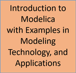
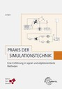
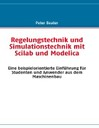

|
|
- Info
Publications
Modelica Standard Library documentation
Books on Modelica
(in reversed chronological order)
 |
Abdulhamid Ansari - "Introduction to Modeling of Engineering Systems by Modelica" . A new free electronic version of Modelica Book in Persian language (May 2020).
Download online from the following blog site: http://ansarina.ir/download-modelica.
|
 |
Christian Kral - "Modelica, Object Oriented Modeling of Polyphase Electric Machines" (November 2018). The book (written in German) gives an introduction to Modelica in the field of electrical engineering with a particular focus on polyphase electric machines. Simulation examples of the open source library HanserModelica include transient and quasi stationary electric circuits including electrical systems coupled to the magnetic, thermal and mechanical domain. The theory and the implementation of the polyphase electrical machines enclosed in the Modelica Standard Library are explained in detail. Each application examples of the HanserModelica library can be simulated in OpenModelica (HanserModelica is included in OpenModelica 1.13.0 as system library). The book also includes a brief tutorial on GitHub using GitKraken to explain how a Modelica project can be initiated, developed and maintained.
|
 |
Alfonso Urquia Moraleda, Caria Martin Villalba, MIGUEL Ángel Rubio Gonzalez and Victorino Sanz Prat - Simulation practice with Modelica (October 2018).
|
 |
Alfonso Urquia Moraleda and Caria Martin Villalba - Modeling and simulation in Engineering Using Modelica (April 2018).
|
|  |
Peter Fritzson, Bernhard Bachmann, Kannan Moudgalya, Francesco Casella, Bernt Lie, Jiri Kofranek. Anton Haumer, Christoph Nytsch Geusen, Luigi Vanfretti; editors.
Introduction to Modelica with Examples in Modeling, Technology, and Applications.
This is a web-based executable extensible Modelica book that has been created to allow easy access to learn Modelica, modeling, simulation, analysis, optimization, etc., allowing editing of models and running simulations in the book from a web page: http://omwebbook.openmodelica.org/
The book is published by Linköping University Electronic Press in the series ”Linköping University Interdisciplinary Studies” with ISSN 1650-9625.
First version, June 2017.
|
|
Peter Fritzson - "Introduction to Modeling and Simulation of Technical and Physical Systems". This introductory book has been translated to Chinese by Fanli Zhou and Liping Chen, and published in China. Suzhou Tongyuan organized the translation work.
It is aimed at teaching Modelica modeling and simulation to beginners, or in courses where there is only limited time for an introduction to Modelica.
The book provides downloadable exercises
available here, and uses the Modelica language standard version 3.1.
A preliminary version of the translated book was available 2015. A slightly updated version will be available in print 2017.
|
 |
Peter Fritzson - "Introduction to Modeling and Simulation of Technical and Physical Systems". Slightly updated and translated to Japanese by Tomohide Hirono, reviewed by Akira Ohata, and published
by TechShare through the efforts of Takaaki Shigemitsu.
It is aimed at teaching Modelica modeling and simulation to beginners, or in courses where there is only limited time for an introduction to Modelica.
The book provides downloadable exercises
available here, and uses the Modelica language standard version 3.1.
The translated book has been published and is available at Amazon Japan.
Please visit: www.amazon.co.jp
and search for 978-4906864058.
|
 |
Peter Fritzson - "Introduction to Modeling and Simulation of Technical and Physical Systems" by ,
copyright (English version) by Wiley-IEEE Press. Has been slightly updated and translated to Spanish.
The translation of a previous version of this book was done by Sebastián Dormido, Madrid, Spain.
José Luis Villa at Technical University of Cartagena de Indias, Cartagena, Colombia, translated the updated parts and updated the current version, including the new appendix.
It is aimed at teaching Modelica modeling and simulation to beginners, or in courses where there is only limited time for
an introduction to Modelica.
The translated book is downloadable at the end of September 2015 from
here including downloadable exercises, and uses the Modelica language standard
version 3.1.
|
 |
Víctor M. Alfaro - "Sistemas dinámicos heterogéneos – Modelado, simulación y optimización con Modelica" (April 2015).
First Spanish book covering the basics of Modelica, its standard library components, and the use (with examples) of OpenModelica, JModelica.org, and Wolfram System Modeler.
The book aim at soften the Modelica learning curve to the Spanish speaking newcomers and to provide a set of examples to the more advanced users.
It is published under a Creative Commons CC-BY-NC-ND license and available at the web address https://pidplanet.wordpress.com/modelica
|
 |
Abdulhamid Ansari - "Introduction to Modeling of Engineering Systems by Modelica" (December 2014). First Modelica Book in Persian language is published by Hormozgan University Publication, ISBN:9786007279267.
More information can be found in the book's table of contents and preface and online from the following blog site: http://ansarina.ir/modelica.
|
 |
Peter Fritzson - "Principles of Object-Oriented Modeling and Simulation with Modelica 3.3: A Cyber-Physical Approach" (December 2014). The second edition features improvements and updates of the
Modelica language including synchronous clocked constructs, examines basic concepts of cyber-physical, equation-based, object-oriented system modeling and simulation.
This text is aimed at System Modeling and Simulation engineers, control engineers, mechanical engineers, those working with CAD (Computer Aided Design), virtual reality, biochemistry, embedded systems, and data communication.
The book can be ordered from both Amazon and from Wiley. From Wiley, 20% discount code, VBG91.
|
|
Michael Tiller - "Modelica by Example" (May 2014). Michael Tiller's latest book on Modelica is the result of a Kickstarter project whose goal was to produce a freely accessible book on Modelica. Now, anyone who wants to learn Modelica can access a free, online and interactive version of the book at http://mbe.modelica.university/.
The book starts off with a discussions on modeling various types of behavior in Modelica (equations, discrete events, differential equations). This is followed by a step-by-step explanation of how to create reusable component models, subsystems and architectures that encapsulated the mathematical behavior. Along the way, various Modelica features like arrays and functions are also introduced.
|
|  |
Peter Junglas - "Praxis der Simulationstechnik" (January 2014). This book (written in German) gives a thorough introduction to simulation using a lot of practical examples. The second part ("Object oriented methods") describes Modelica and its libraries using MapleSim and OpenModelica as tools. For more information please have a look at the publisher's site and the the author's site.
|
| Modelica Web Reference |
Michael Tiller - "Modelica Web Reference" (2013). While this is not technically a "book" on Modelica, it a useful online reference for information about the Modelica language. Many examples and explanations are accessible within a single click and it includes links back to the specification when further detail is required. This web reference is constantly evolving and the source material is hosted on GitHub.
|
 |
Peter Fritzson - The new short introductory book "Introduction to Modeling and Simulation of Technical and Physical Systems" (September 2011) by Peter Fritzson is aimed at teaching Modelica modeling and simulation to beginners, or in courses where there is only limited time for an introduction to Modelica. However, if you already have the big book "Principles of Object-Oriented Modeling and Simulation with Modelica 2.1", you will not need the new book, except for teaching introductory courses. The book is 232 pages, uses downloadable exercises and solution, and uses the Modelica language standard version 3.1. |
|  |
Peter Beater - "Regelungstechnik und Simulationstechnik mit Scilab und Modelica" (January 2010). This book (written in German) gives an introduction to two aspects of the design of technical systems: Analytical analysis and control of their stability and non-linear simulation of their behaviour in the time domain. The first part of the book covers the standard methods of classical control and thus gives a foundation to understand modern simulation tools. In the second part several technical examples are used to explain modelling and simulation approaches. They start with a simple linear electrical oscillator, followed by a non-linear pendulum, a bouncing ball, heat conduction in a long rod and a pneumatic bellows. These examples are first used to introduce simple numerical integration algorithms and their pitfalls and later to explain basic concepts and operators in Modelica. The most important Modelica keywords and operators are listed and explained in a separate chapter.
The book is intended for students and engineers of mechanical engineering. Especially in the first part, there are numerous examples and problems to illustrate the theory. An appendix gives a summary of the required mathematical methods and physical models and answers to the problems.
|
 |
Peter Fritzson - "Principles of Object-Oriented Modeling and Simulation with Modelica 2.1" (November 2003). This book teaches modeling and simulation and gives an introduction as well as a very comprenhensive overview of the Modelica language including many examples. Moreover, about one third of the book is devoted to application examples and related application background theory. Many of these examples are available in downloadable executable form from the OpenModelica.org web site. Part four of the book gives an overview of the most important symbolic and numeric methods used in typical Modelica tools. Appendices include parts of the Modelica standard library. The whole book is 940 pages long. Book excerpts. More...
|
|
|
Michael Tiller wrote the first book on Modelica with the title "Introduction to Physical Modeling with Modelica" (May 2001). The book provides a solid foundation in the Modelica modeling language and shows interesting modeling examples from a wide range of engineering disciplines. You can find out more about the book here |
Tutorials on Modelica

Symposium program with slides and videos.
Modelica Conferences
Overview of topics, organization and rules for Modelica Conferences.
Electronic proceedings (open access):
13th International Modelica Conference 2019
89 papers from Modelica'2019, at Regensburg, Germany, March 4-6, 2019.
1st American Modelica Conference 2018
26 papers from American Modelica Conference 2018, at Cambridge MA, USA, Oct. 9-10, 2018.
2nd Japanese Modelica Conference 2018
37 papers from Japanese Modelica Conference 2018, at Tokyo, Japan, May 17-18, 2018.
12th International Modelica Conference 2017
102 papers from Modelica'2017, at Prague, Czech Republic, May 15-17, 2017.
1st Japanese Modelica Conference 2016
18 papers from Japanese Modelica Conference 2016, at Tokyo, Japan, May 23-24, 2016.
11th International Modelica Conference 2015
101 papers from Modelica'2015, at Versailles, France, Sept. 21-23, 2015.
6 papers from the proceedings have been published in an improved form, open access, in the "Special issue on object-oriented modelling and simulation in 2017 (journal Mathematical and Computer Modelling of Dynamical Systems; listed in the Thomson Reuters, Journal Citation Report).
10th International Modelica Conference 2014
137 papers from Modelica'2014, at Lund University, Sweden, March 10-12, 2014.
9th International Modelica Conference 2012
102 papers from Modelica'2012,
at Munich, Germany, September 3-5, 2012.
8th International Modelica Conference 201199 papers from Modelica'2011, at Technical University of Dresden, Germany, March 20-22, 2011.
7th International Modelica Conference 2009105 papers from Modelica'2009, at Como, Italy, Sept. 20-22, 2009.
6th International Modelica Conference 200882 papers from Modelica'2008, at Bielefeld University of Applied Sciences, Germany, March 3-4, 2008.
5th International Modelica Conference 200681 papers from Modelica'2006, at arsenal research, Vienna, Austria, September 4-5, 2006.
4th International Modelica Conference 200565 papers from Modelica'2005, at Technical University Hamburg-Harburg, Germany, March 7-8, 2005.
3rd International Modelica Conference 200342 papers from Modelica'2003, at Linköping University, Sweden, November 3 - 4, 2003.
2nd International Modelica Conference 200241 papers from Modelica'2002, at Deutsches Zentrum für Luft- und Raumfahrt (DLR) in Oberpfaffenhofen, Germany, March 18 - 19, 2002.
1st International Modelica Conference 200021 papers from Modelica'2000, at Lund University, Sweden, October 23 - 24, 2000.
Journal Articles and Articles in Books
Wiechert, Wolfgang and Noack, Stephan and Elsheikh, AtyaModeling Languages for Biochemical Network Simulation: Reaction vs Equation Based Approaches in Advances in Biochemical Engineering/Biotechnology, 2010, Volume 121/2010, 109-138, DOI: 10.1007/10_2009_64. Åkesson, J., Ekman, T., and Hedin, G.,Implementation of a Modelica compiler using JastAdd attribute grammars. Science of Computer Programming, July 2009. doi:10.1016/j.scico.2009.07.003. [download paper]Åkesson, J., Ekman, T., and Hedin, G.,Development of a Modelica Compiler using JastAdd. Electronic Notes in Theoretical Computer Science (ENTCS),203:2, pp. 117-131, April 2008. [download paper]Otter M., Elmqvist H., Mattsson S. E.: Multidomain Modeling with Modelica. Handbook of Dynamic System Modelling, editor Paul A. Fishwick, Chapman & Hall/CRC, chapter 36, pp. 36.1 - 36.27, 2007.
Elmqvist, H., Mattsson, S. E., Otter, M.: Object-Oriented and Hybrid Modeling in Modelica. Journal Européen des systèmes automatisés, 35,1/2001, pp. 1 à X.
Otter, M., Remelhe, M., Engell, S., Mosterman, P.:Hybrid Models of Physical Systems and Discrete Controllers. at - Automatisierungstechnik, vol. 48, 2000.
A series of 17 articles about:Object Oriented Modeling of Physical Systems, part 1 - 17 (in German), 1999-2000.
Mattsson, S.E., Elmqvist, H., Otter, M.:Physical system modeling with Modelica. Control Engineering Practice, vol. 6, pp. 501-510, 1998
Mattsson, S.E., Elmqvist, H., Broenink, J.F.:Modelica: An International effort to design the next generation modelling language". Journal A, Benelux Quarterly Journal on Automatic Control, vol. 38:3, 16-19, September 1997. Special issue on Computer Aided Control System Design, CACSD, 1998.
Theses
Mateják, Marek:
Formalization of Integrative Physiology. Dissertation, Charles University in Prague, 2015.
Frenkel, Jens:
Entwicklung eines Modelica Compiler BackEnds für große Modelle. Dissertation, Technische Universität Dresden, 2014.
Davies, Kevin:
Declarative Modeling of Coupled Advection and Diffusion as Applied to Fuel Cells. Ph.D. dissertation, Georgia Institute of Technology, 2014.
Atiyah, Elsheikh:
Modelica-based computational tools for sensitivity analysis via automatic differentiation
. Ph.D. dissertation, RWTH Aachen, 2012.
Broman, David:Meta-Languages and Semantics for Equation-Based Modeling and Simulation. Dissertation, Linköping University, 2010. Sanz, Victorino:Hybrid System Modeling Using the Parallel DEVS Formalism and the Modelica Language. Dissertation, Universidad Nacional de Educación a Distancia, Madrid, 2010. Raabe, Nick:Anlassen großer Asynchronmotoren in Schiffsbordnetzen (Starting large asynchronous motors on board ships). Dissertation, Technische Universität Hamburg-Harburg, 2010. Richter, Christoph:Proposal of New Object-Oriented Equation-Based Model Libraries for Thermodynamic Systems. Dissertation, Technische Universität Braunschweig, 2008.Schweiger, Christian:Objektorientierte Modellierung und Echtzeitsimulation von Kraftfahrzeug-Antriebssträngen (Object-Oriented Modeling and Real-Time Simulation of Automotive Powertrains). Dissertation, Munich University of the German Armed Forces, 2008.Lundvall, Håkan:Automatic Parallelization using Pipelining for Equation-Based Simulation Languages. licentiate thesis, Linköping University, 2008.Pfeiffer, A.:Numerische Sensitivitätsanalyse unstetiger multidisziplinärer Modelle mit Anwendungen in der gradientenbasierten Optimierung (Numerical sensitivity analysis of discontinuous multidisciplinary models with applications in gradient based optimization). Dissertation, Martin Luther University Halle-Wittenberg, 2008.Åkesson, J.:Tools and Languages for Optimization of Large-Scale Systems. Dissertation, Lund University, 2007.Martin-Villalba, C.:Object-Oriented Modeling of Virtual Laboratories for Control Education. PhD Dissertation, Escuela Técnica Superior de Ingeniería Informática, UNED, Spain, 2007.Broman, D.:Safety, Security, and Semantic Aspects of Equation-Based Object-Oriented Languages and Environments. licentiate thesis, Thesis No 1337, Linköping University, 2007.Aronsson, Peter:Automatic Parallelization of Equation-Based Simulation Programs. Dissertation, Linköping University, 2006.Saldamli, Levon:PDEModelica - A High-Level Language for Modeling with Partial Differential Equations. Dissertation, Linköping University, 2006.Reichl, G.:Optimierte Bewirtschaftung von Kläranlagen basierend auf der Modellierung mit Modelica. Dissertation, Technical University of Ilmenau, 2005.Wischhusen, S.:Dynamische Simulation zur wirtschaftlichen Bewertung von komplexen Energiesystemen. Dissertation, Technical University of Hamburg-Harburg, 2005.Richert, F.:Objektorientierte Modellbildung und Nichtlineare Prädiktive Regelung von Dieselmotoren. Dissertation, RWTH Aachen, 2005.Pfafferott, T.:Dynamische Simulation von CO2-Kälteprozessen in mobilen Anwendungen. Dissertation, Technical University of Hamburg-Harburg, 2004.Bunus, Peter:Debugging Techniques for Equation-Based Languages. Dissertation, Linköping University, 2004.Fabricius, S. M. O.:Modeling and simulation for plant performability assessment with application to maintenance in the process industry . Dissertation, ETH Zürich, 2003.Merz, R. M.:Objektorientierte Modellierung thermischen Gebäudeverhaltens. Dissertation, University of Kaiserslauten, 2002.Tummescheit, Hubertus:Design and Implementation of Object-Oriented Model Libraries Using Modelica. Dissertation, Lund University, 2002.Bunus, Peter:Debugging and Structural Analysis of Declarative Equation-Based Languages. (licentiate thesis), Linköping University, 2002.Eborn, Jonas:On Model Libraries for Thermo-hydraulic Applications. Dissertation, Lund University, 2001.Engelson, Vadim:Tools for Design, Interactive Simulation, and Visualization of Object-Oriented Models in Scientific Computing. Dissertation, Linköping University, 2000. Elmqvist, Hilding:A Structured Model Language for Large Continuous Systems. Dissertation, Lund Institute of Technology (now called: Lund University), 1978.
(The algorithms presented in section 5.2 are important for Modelica tools).
Conference Papers
(Conference papers from Modelica conferences are not listed here.) Many of conference papers can be downloaded in pdf format.
2013
EOOLT'2013 workshop
Proceedings of the 5th International Workshop on Equation-Based Object-Oriented Modeling Languages and Tools, University of Nottingham, Nottingham, UK, April 19,
2012
Christoph Brandt, Francesco Santini, Natallia Kokash, Farhad Arbab:Modelling and Simulation of Selected Operational IT Risks in the Banking Sector. In Proceedings of '26th European Simulation and Modelling Conference (ESM 2012)'
2011
EOOLT'2011 workshop
Proceedings of the 4th International Workshop on Equation-Based Object-Oriented Modeling Languages and Tools, Zurich, Switzerland, September 5, 2011
Ingvar Andreassen and Dietmar Winkler,:Stability Analysis of AGC in the Norwegian Energy System. In Proceedings of 'The 52nd Scandinavian Conference on Simulation and Modeling (SIMS 2011)', Mälardalen University, 2011, pp 133-143
2010
EOOLT'2010 workshop (part of Models 2010)
Proceedings of the 3rd International Workshop on Equation-Based Object-Oriented Modeling Languages and Tools, Oslo, Norway, October 3
2009
Åkesson, Gäfvert, Tummescheit:JModelica - an Open Source Platform for Optimization of Modelica Models. In Proceedings of MATHMOD 2009 - 6th Vienna International Conference on Mathematical Modelling, Vienna, Austria, February 11-13, 2009.
2008
EOOLT'2008 workshop (part of ECOOP2008)
Proceedings of the 2nd International Workshop on Equation-Based Object-Oriented Languages and ToolsPaphos, Cyprus, July 8
Ericsson, Magnusson, Fritzson, Pop:3D Animation and Programmable 2D Graphics for Visualization of Simulations in OpenModelica. In Proceedings of the 49th Scandinavian Conference on Simulation and Modeling (SIMS'2008), available at www.scansims.org and http://www.ep.liu.se. Oslo, Norway. October 7-8, 2008.
Jörn Guy Süss, Peter Fritzson, Adrian Pop, and Luke Wildman:Towards Integrated Model-Driven Testing of SCADA Systems Using the Eclipse Modeling Framework and Modelica. In Proceedings of 19th Australian Software Engineering Conference (ASWEC 2008), Perth, Western Australia, March 25 – 28, 2008.
2007
EOOLT'2007 workshop (part of ECOOP2007)
Proceedings of the 1st International Workshop on Equation-Based Object-Oriented Languages and Tools Berlin, Germany, July 30
Åkesson, J., Ekman, T., and Hedin, G.,"Development of a Modelica Compiler using JastAdd", Seventh Workshop on Language Descriptions, Tools and Applications, Braga, Portugal. [request paper]Adrian Pop, David Akhvlediani, Peter Fritzson:Integrated UML and Modelica System Modeling with ModelicaML in Eclipse. In Proceedings of the 11th IASTED International Conference on Software Engineering and Applications (SEA 2007), Cambridge, MA, USA, November 19-21, 2007. Adrian Pop, David Akhvlediani, and Peter Fritzson:Towards Run-time Debugging of Equation-based Object-oriented Languages. In Proceedings of the 48th Scandinavian Conference on Simulation and Modeling (SIMS'2007), available at www.scansims.org and http://www.ep.liu.se. Göteborg, Sweden. October 30-31, 2007. Kristoffer Norling, David Broman, Peter Fritzson, Alexander Siemers, and Dag Fritzson:Secure Distributed Co-Simulation over Wide Area Networks. In Proceedings of the 48th Scandinavian Conference on Simulation and Modeling (SIMS'2007), available at www.scansims.org and http://www.ep.liu.se. Göteborg, Sweden. October 30-31, 2007. Håkan Lundvall and Peter Fritzson:Automatic Parallelization of Object Oriented Models Executed with Inline Solvers. In Proceedings of EuroPvm/Parsim, Springer Verlag LNCS, Volume 4757, 2007. See also http://pvmmpi07.lri.fr/parsim07.html. Paris, France, Sept 30 - Oct 3, 2007. Håkan Lundvall and Peter Fritzson:Automatic Parallelization of Object Oriented Models across Method and System. In Proceedings of the EuroSim Congress, Ljubljana, Sept 9-13, 2007 www.eurosim2007.org.
Anders Sandholm, Peter Fritzson, Varun Arora, Scott Delp, Göran Petersson, and Jessica Rose:The Gait E-Book - Development of Effective Participatory Learning using Simulation and Active Electronic Books. In Proceedings of the 11th Mediterranean Conference on Medical and Biological Engineering and Computing (Medicon'2007), Ljubljana, Slovenia, June 26 - 30, 2007. Peter Fritzson, Erik Ulfhielm, Ales Belic, Martin Fransson, Henrik Gréen.:Biochemical Mathematical Modeling with Modelica. In Proceedings of Aplimat'2007, Bratislava, Slovakia, February 6-8, 2007.
2006
Alexander Siemers, Dag Fritzson, and Peter Fritzson:Meta-Modeling for Multi-Physics Co-Simulations applied for OpenModelica. In Proceedings of International Congress on Methodologies for Emerging Technologies in Automation (ANIPLA2006), Rome, Italy, November 13-15, 2006. David Broman, Kaj Nyström, and Peter Fritzson:Determining Over- and Under-Constrained Systems of Equations using Structural Constraint Delta. In Proceedings of the 4th Int. Conf. on Generative Programming and Component Engineering (GPCE2006), Portland, Oregon, Oct 22-26, 2006. Filip Claeys, Maria Chtepen, Peter Fritzson, Peter Vanrolleghem:Towards Transparent Distributed Execution in the Tornado Framework. In Proceedings of Environmental Applications and Distributed Computing (EADC2006), Bratislava, Slovakia, Oct 16-18, 2006. Filip Claeys, Peter Vanrolleghem, and Peter Fritzson:Boosting the Efficiency of Compound Virtual Experiments through a Priori Exploration of the Solver Setting Space. In Proceedings of the 2nd European Modelling & Simulation Symposium (EMSS2006), Barcelona, October 4-6, 2006. Filip Claeys, Peter Vanrolleghem, and Peter Fritzson:A Generalized Framework for Abstraction and Dynamic Loading of Numerical Solvers. In Proceedings of the 2nd European Modelling & Simulation Symposium (EMSS2006), Barcelona, October 4-6, 2006. Peter Fritzson, Peter Aronsson, Håkan Lundvall, Kaj Nyström, Adrian Pop, Levon Saldamli, and David Broman:OpenModelica - A Free Open-Source Environment for System Modeling, Simulation, and Teaching. In Proceedings of IEEE International Symposium on Computer-Aided Control Systems Design (CACSD), Technische Universität München, Germany, October 4-6, 2006. Adrian Pop and Peter Fritzson:MetaModelica: A Unified Equation-Based Semantical and Mathematical Modeling Language. In Proceedings of Joint Modular Languages Conference 2006 (JMLC2006) LNCS Springer Verlag. Jesus College, Oxford, England, Sept 13-15, 2006. Elmir Jagudin, Andreas Remar, Adrian Pop, and Peter Fritzson:OpenModelica MDT Eclipse Plugin for Modelica Development, Code Browsing, and Simulation. In Proceedings of the 47th Conference on Simulation and Modelling of the Scandinavian Simulation Society (SIMS2006), Helsingfors, Finland, Sept. 28-29, 2006.
Martin Fransson, Peter Fritzson, Malin Lindqvist, and Curt Peterson: A Preliminary Study of Modeling and Simulation in Individualized Drug Dosage - Azathioprine on Inflammatory Bowel Disease. In Proceedings of the 47th Conference on Simulation and Modelling of the Scandinavian Simulation Society (SIMS2006), Helsingfors, Finland, Sept. 28-29, 2006.
Anders Sandholm, Peter Fritzson, Gunilla Nilsson, and Göran Petersson: Towards a Flexible General Training Simulator Platform Based on Modelica. n Proceedings of the 47th Conference on Simulation and Modelling of the Scandinavian Simulation Society (SIMS2006), Helsingfors, Finland, Sept. 28-29, 2006.
Christoph Kessler and Peter Fritzson: NestStepModelica - Mathematical Modeling and Bulk-Synchronous Parallel Simulation. In Proc. of PARA'06, Umeå, June 19-20, 2006., Springer Verlag. Anders Fernström, Ingemar Axelsson, Peter Fritzson, Anders Sandholm, Adrian Pop:OMNotebook - Interactive WYSIWYG Book Software for Teaching Programming. In Proc. of the Workshop on Developing Computer Science Education - How Can It Be Done?. Linköping University, Dept. Computer & Inf. Science, Linköping, Sweden, March 10, 2006
2005
Stina Edelfeldt and Peter Fritzson:Evaluation and Comparison of Models and Modeling Tools Simulating Nitrogen Processes in Wetlands. In Proceedings of the 46th Conference on Simulation and Modelling of the Scandinavian Simulation Society (SIMS2005), Trondheim, Norway, October 13-14, 2005. Peter Fritzson, Peter Aronsson, Håkan Lundvall, Kaj Nyström, Adrian Pop, Levon Saldamli, David Broman:The OpenModelica Modeling, Simulation, and Development Environment. In Proceedings of the 46th Conference on Simulation and Modelling of the Scandinavian Simulation Society (SIMS2005), Trondheim, Norway, October 13-14, 2005. Håkan Lundvall and Peter Fritzson:Event Handling in the OpenModelica Compiler and Run-time System. In Proceedings of the 46th Conference on Simulation and Modelling of the Scandinavian Simulation Society (SIMS2005), Trondheim, Norway, October 13-14, 2005. Emma Larsdotter Nilsson and Peter Fritzson:Biochemical and Metabolic Modeling with Modelica. In Proceedings of the 4th International Conference on Modeling and Simulation in Biology, Medicine, and Biomedical Engineering (BioMedSim'2005), Linköping, Sweden, May 26-27, 2005. David Broman and Peter Fritzson:Ideas for Security Assurance in Data Communication Services Using Modelica. In Proceedings on the 2:nd Conference on Modeling and Simulation for Safety and Security (SimSafe'2005). Linköping, Sweden, May 30, 2005.
2004
Kaj Nyström, Peter Aronsson and Peter Fritzson:GridModelica - A Modeling and Simulation Framework for the Grid. In Proceedings of the 45th Conference on Simulation and Modelling of the Scandinavian Simulation Society (SIMS2004), 23-24 September 2004, Copenhagen, Denmark. Adrian Pop, Olof Johansson, and Peter Fritzson:An integrated framework for model-driven design and development using Modelica. In Proceedings of the 45th Conference on Simulation and Modelling of the Scandinavian Simulation Society (SIMS2004), 23-24 September 2004, Copenhagen, Denmark. Håkan Lundvall, Peter Bunus, Peter Fritzson:Towards Automatic Generation of Model Checkable Code from Modelica. In Proceedings of the 45th Conference on Simulation and Modelling of the Scandinavian Simulation Society (SIMS2004), 23-24 September 2004, Copenhagen, Denmark. Levon Saldamli and Peter Fritzson:Field Type and Field Constructor in Modelica. In Proceedings of the 45th Conference on Simulation and Modelling of the Scandinavian Simulation Society (SIMS2004), 23-24 September 2004, Copenhagen, Denmark. Peter Aronsson and Peter Fritzson:Automatic Parallelization in OpenModelica. n Proceedings of 5th EUROSIM Congress on Modeling and Simulation, Paris, France. ISBN (CD-ROM) 3-901608-28-1, Sept 2004. Andreas Idebrant and Peter Fritzson:Aircraft - A Modelica Library for Aircraft Dynamics Simulation. In Proceedings of 5th EUROSIM Congress on Modeling and Simulation, Paris, France. ISBN (CD-ROM) 3-901608-28-1, Sept 2004. Vadim Engelson, Peter Fritzson, and Ulf Sellgren:An Easy-to-use Generic Model Configurator for Models in Multiple Tool Formats. In Proceedings of 5th EUROSIM Congress on Modeling and Simulation, Paris, France. ISBN (CD-ROM) 3-901608-28-1, Sept 2004. Fritzson Peter, Engelson V, Idebrant A, Aronsson P, Lundvall H, Bunus P, Nyström K:Modelica - A Strongly Typed System Specification Language for Safe Engineering Practices. In Proceedings of the SimSAFE Conference, Karlskoga, Sweden, June 15-17, 2004 Surewaard, E., Kok, D. and Tiller, M., "Engine Cranking: Advanced Modeling and an Investigation of the Influence of the Initial Crank Angle and Inertia", SAE paper 2004-01-1875, 2004.A PDF presentation (5Mb) about this material, given at Eindhoven University.
2003
Lengquist-Sandelin, Eva-Lena, Susanna Monemar, Peter Fritzson, and Peter Bunus:DrModelica - An Interactive Environment for Learning Modelica and Modeling using MathModelica. In Proceedings of ISCS'2003, Cefalu, Sicily, Italy, Nov 28-29, 2003. Peter Bunus and Peter Fritzson:Semi-Automatic Fault Localization and Behaviour Verification for Physical System Simulation Models. n Proceedings of the 8th IEEE International Conference on Automated Software Engineering, Montreal, Canada, October 6-10, 2003. Håkan Lundvall and Peter Fritzson:Modeling Concurrent Activities and Resource Sharing in Modelica. In Proceedings of the 44th Scandinavian Conference on Simulation and Modeling (SIMS2003), available at www.scansims.org. Västerås, Sweden. September 18-19, 2003. Vadim Engelson, Peter Bunus, Lucian Popescu, and Peter Fritzson:Mechanical CAD with Multibody Dynamic Analysis Based on Modelica Simulation. In Proceedings of the 44th Scandinavian Conference on Simulation and Modeling (SIMS2003), available at www.scansims.org. Västerås, Sweden. September 18-19, 2003. Eva-Lena Lengquist-Sandelin, Susanna Monemar, Peter Fritzson, and Peter Bunus:DrModelica – A Web-Based Teaching Environment for Modelica. In Proceedings of the 44th Scandinavian Conference on Simulation and Modeling (SIMS2003), available at www.scansims.org. Västerås, Sweden. September 18-19, 2003. Håkan Lundvall and Peter Fritzson:Modeling Concurrent Activities and Resource Sharing in Modelica. In Proceedings of the 44th Scandinavian Conference on Simulation and Modeling (SIMS2003), available at www.scansims.org. Västerås, Sweden. September 18-19, 2003. Surewaard, E., Tiller, M. and Linzen, D., "A Comparison of Different Methods for Battery and Supercapacitor Modeling", SAE paper 2003-01-2290, 2003 (also reprinted in the SAE Transactions of 2003)Peter Aronsson, Peter Fritzson:Task Merging and Replication Using Graph Rewriting. Tenth International Workshop on Compilers for Parallel Computers, Jan 8-10, 2003, Amsterdam, the Netherlands. (Invited)
2002
Peter Aronsson, Peter Fritzson, Levon Saldamli, and Peter Bunus:Incremental declaration handling in Open Source Modelica. In Proceedings of the 43rd Scandinavian Conference on Simulation and Modeling (SIMS2002). Oulu, Finland. September 26-25, 2002. Vadim Engelson, Peter Fritzson:Distributed Simulation Environment for Heterogeneous Computer Clusters. In Proceedings of the 43rd Scandinavian Conference on Simulation and Modeling (SIMS2002). Oulu, Finland. September 26-25, 2002. Peter Bunus, Peter Fritzson:A Debugging Scheme for Declarative Equation Based Modeling Languages. In Proceedings of Fourth International Symposium on Practical Aspects of Declarative Languages, Portland, Oregon, USA, Jan 19-20, 2002. LNCS 2257, Springer Verlag, 2002
2001
Levon Saldamli, Peter Fritzson:Domains and Partial Differential Equations in Modelica. In Proceedings of 42nd Conference on Simulation and Modeling (SIMS2001), Telemark University, Porsgrunn, Norway, Oct 8-9, 2001.Levon Saldamli, Peter Fritzson:A Modelica-Based Language for Object-Oriented Modeling with Partial Differential Equations. RIn Proceedings of the 4th International EuroSim Congress, Delft, the Netherlands, June 26-29, 2001. Bowles, P., Tiller, M., Elmqvist H., Brück D., Mattsson S.E., Möller A., Olsson A., Otter M.:Feasibility of Detailed Vehicle Modelinga>. SAE World Congresss, paper 01P-321, Detroit, March 5-8, 2001.
2000
Elmqvist, H., Mattsson, S. E., Otter, M.: Object-Oriented and Hybrid Modeling in Modelica. ADPM 2000, Dortmund Germany, 2000. Vadim Engelson, Dag Fritzson, Peter Fritzson,:Lossless Compression of High-Volume Numerical Data for Simulations. In Proceedings of The 2000 IEEE Data Compression Conference, Snowbird, Utah March 28-30, 2000.
1999
Mattsson, S.E., Otter, M. Hilding, E.:Modelica Hybrid Modeling and Efficient Simulation. 38th IEEE Conference on Decision and Control, CDC'99, Phoenix, Arizona, USA, pp. 3502-3507, Dec 7-10, 1999. Ferreira, J.A., de Oliveira, J.E., Costa, V.A.:Modeling of Hydraulic Systems for Hardware-in-the-loop Simulation: a Methodology Proposal. 1999 International Mechanical Engineering Congress & Exposition Nashville, USA, 14-19 Nov. 1999. Ferreira, J.A., de Oliveira, J.E.:Modeling Hybrid Systems Using Statecharts and Modelica. 7th IEEE International Conference on Emerging Technologies and Factory Automation, Barcelona, Spain, 18-21 Oct., 1999. Elmqvist, H., Mattsson, S.E., Otter, M.:Modelica - A Language for Physical System Modeling, Visualization and Interaction. Plenary paper. 1999 IEEE Symposium on Computer-Aided Control System Design, CACSD'99, Hawaii, pp. 630-639, August 22-27, 1999. Otter, M., Elmqvist, H., Mattsson, S.E.:Hybrid Modeling in Modelica based on the Synchronous Data Flow Principle. 1999 IEEE Symposium on Computer-Aided Control System Design, CACSD'99, Hawaii, pp. 151-157, August 22-27, 1999. Jirstrand Mats, Johan Gunnarsson, and Peter Fritzson:A New Modeling and Simulation Environment for Modelica. A New Modeling and Simulation Environment for Modelica. In Proceedings of the Third International Mathematica Symposium, IMS’99, Linz, Austria, Aug 1999. Wrangsjö, Andreas, Fritzson, Fritzson, and Sheshadri, K.:Transforming Systems of PDEs for Efficient Numerical Solution. In Proceedings of the International Mathematica Symposium, IMS'99, Linz, Austria. 1999. Broenink, J.F.:Object-oriented modeling with bond graphs and Modelica. ICBGM '99, International Conference on Bond Graph Modeling and Simulation (part of WMC '99, the Western MultiConference, San Francisco, CA, January 17-20 1999)
1998
Fritzson, P., Engelson, V.:Modelica - A Unified Object-Oriented Language for System Modeling and Simulation. ECOOP'98 (the 12th European Conference on Object-Oriented Programming), Brussels, Belgium, July 20-24, 1998. Elmqvist, H., Mattsson, S.E., Otter, M.:Modelica - An International Effort to Design an Object-Oriented Modeling Language. Summer Computer Simulation Conference '98, Reno, Nevada, USA, July 19-22, 1998.
Fritzson, P., Engelson, V., Gunnarsson, J.:An Integrated Modelica Environment for Modeling, Documentation and Simulation. Summer Computer Simulation Conference '98, Reno, Nevada, USA, July 19-22, 1998. Kågedal, D., Fritzson, P.:Generating a Modelica Compiler from Natural Semantics Specifications. Summer Computer Simulation Conference '98, Reno, Nevada, USA, July 19-22, 1998. Mosterman, P.J., Otter, M., Elmqvist, H.:Modeling Petri Nets as Local Constraint Equations for Hybrid Systems Using Modelica. Summer Computer Simulation Conference '98, Reno, Nevada, USA, pp. 314-319, July 19-22, 1998. Peter Fritzson:Language for Equation- based Physical Modeling and High Performance Simulation. In proc. of PARA’98 - Workshop on Applied Parallel Computing in Large Scale Scientific and Industrial Problems, Umeå, June 14-17, 1998. In LNCS 1541, Springer Verlag.
Åström, K.J., Elmqvist, H., Mattsson, S.E.: Evolution of Continuous-Time Modeling and Simulation. The 12th European Simulation Multiconference, ESM'98, Manchester, UK, June 16-19, 1998.
Elmqvist, H., Mattsson, S.E., Otter, M.: Modelica - The New Object-Oriented Modeling Language. The 12th European Simulation Multiconference, ESM'98, Manchester, UK, June 16-19, 1998.
Tummescheit, H., Eborn, J.: Design of a Thermo-Hydraulic Model Library in Modelica. The 12th European Simulation Multiconference, ESM'98, Manchester, UK, June 16-19, 1998.
Mattsson, S.E., Elmqvist, H.: An Overview of the Modeling Language Modelica. Eurosim '98 Simulation Congress, Helsinki, Finland, April 14-15, 1998.
Franke, R.: Modeling and Optimal Design of a Central Solar Heating Plant with Heat Storage in the Ground Using Modelica. Eurosim '98 Simulation Congress, Helsinki, Finland, April 14-15, 1998.
1997
Elmqvist, H., Mattsson, S.E.: An Introduction to the Physical Modeling Language Modelica. ESS'97 European Simulation Symposium, Passau, Germany, October 19-22, 1997.
Otter,M., Schlegel, C., Elmqvist, H.: Modeling and Realtime Simulation of an Automatic Gearbox using Modelica. ESS'97 European Simulation Symposium, Passau, Germany, pp. 115-121, October 19-22, 1997.
Tummescheit, H., Klose, M., Ernst, T.: Modelica and Smile - A Case Study Applying Object-oriented Concepts for Multi-facet Modeling. ESS'97 European Simulation Symposium, Passau, Germany, October 19-22, 1997.
Mattsson, S.E.: On Modeling of Heat Exchangers in Modelica. ESS'97 European Simulation Symposium, Passau, Germany, October 19-22, 1997.
Broenink, J.F.: Bond-graph modeling in Modelica. ESS'97 European Simulation Symposium, Passau, Germany, October 19-22, 1997.
Elmqvist, H., Otter, M., Schlegel, C.: Physical Modeling with Modelica and Dymola and Real-Time Simulation with Simulink and Real Time Workshop. MATLAB Conferences in San Jose, October 6-8 and Stockholm, October 27-28, 1997.
Jeandel, A., Boudaud, F.: Physical System Modelling Languages: from ALLAN to Modelica. Building Simulation '97, IBPSA Conference, Prague, September 8-10, 1997.
Elmqvist, H., Mattsson, S.E.: Modelica - The Next Generation Modeling Language - An International Design Effort. First World Congress of System Simulation, Singapore, September 1-3, 1997.
Ernst, T., Jähnichen, S., Klose, M.: Object-Oriented Physical Systems Modeling, Modelica, and the Smile/M Simulation Environment. 15th IMACS World Congress on Scientific Computation, Modelling and Applied Mathematics, Berlin, August 24-29, 1997.
Mattsson, S.E., Elmqvist, H.: Modelica - An international effort to design the next generation modeling language. 7th IFAC Symposium on Computer Aided Control Systems Design, CACSD'97, Gent, Belgium, April 28-30, 1997.
|